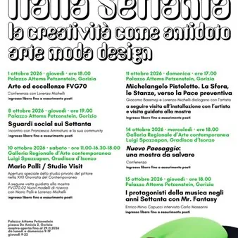

da gio 1 ott a gio 15 ott
“Italia Settanta. La creatività come antidoto. Arte Moda Design” - Eventi collaterali
A corredo della mostra "Italia settanta. La creatività come antidoto. Arte moda design", allestita a Palazzo Attems Petzeinstein, per il mese di ottobre a Gorizia sono in programma i seguenti eventi collaterali. giovedì 1° ottobre – ore 18.00 “Arte ed eccellenze FVG70”…
 Indicazioni
Indicazioni
- Costi e prenotazioni
- Costo non indicato · Prenotazione non indicata
- Programma
- Programma da verificare. Apri la fonte ufficiale per orari e possibili aggiornamenti.
- In caso di maltempo
- Nessuna indicazione specifica pubblicata.
- Note
- Acquisito automaticamente dalla fonte.
L’EVENTO
Descrizione completa
A corredo della mostra "Italia settanta. La creatività come antidoto. Arte moda design", allestita a Palazzo Attems Petzeinstein, per il mese di ottobre a Gorizia sono in programma i seguenti eventi collaterali.
giovedì 1° ottobre – ore 18.00
“Arte ed eccellenze FVG70”
Conferenza con Lorenzo Michelli
giovedì 8 ottobre – ore 19.00
“Sguardi social sui Settanta”
Incontro con Francesco Ammaturo e la sua community
domenica 11 ottobre – ore 17.00
“Michelangelo Pistoletto. La Sfera, la Stanza, verso la Pace preventiva”
Giacomo Bassmaji e Lorenzo Michelli dialogano con l’artista
A seguire – visita all’installazione con l’artista e visita guidata alla mostra
giovedì 15 ottobre – ore 18.00
“I protagonisti della musica negli anni Settanta con Mr. Fantasy”
Enrico Minio Capucci intervista Carlo Massarini
Ingresso libero fino ad esaurimento posti
Accesso consentito con il biglietto d'ingresso alla mostra
La mostra sarà visitabile fino al 29 novembre nei seguenti orari:
da lunedì a domenica 9.00 – 19.00
giovedì – orario prolungato 9.00 – 22.00
Contatti: didatticamusei.erpac@regione.fvg.it / 0481 285335
Informazioni e tariffe QUI
Gli anni Settanta si distinguono infatti per la straordinaria pluralità dei linguaggi artistici e per il venir meno di una direzione unitaria della ricerca. Accanto alle esperienze concettuali, che privilegiano il progetto e l’idea, si sviluppano pratiche che analizzano criticamente i fondamenti della pittura, mentre altre invadono lo spazio attraverso installazioni e interventi ambientali. Tra memoria e sperimentazione, citazione e innovazione, il decennio ridefinisce profondamente i modelli del fare artistico. La selezione espositiva di arti visive – strutturata a partire dalle ambientazioni di moda e design - mette in relazione esperienze eterogenee: dagli echi della stagione Pop e delle ricerche degli anni Sessanta fino a pratiche che anticipano le sensibilità degli anni Ottanta, evidenziando continuità e trasformazioni all’interno di un quadro non lineare.
IL PROGRAMMA
Programma e orari
Appuntamenti raccolti dalle fonti elencate. Dove manca un orario, non è ancora disponibile in questa scheda.
Programma pubblicato
- Dal 2026-10-01 al 2026-10-15
INFORMAZIONI UTILI
Prima di partire
- Controllare la fonte prima di partire.
ORGANIZZAZIONE